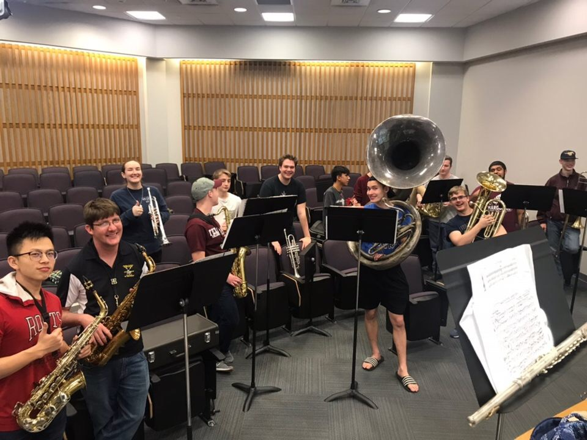
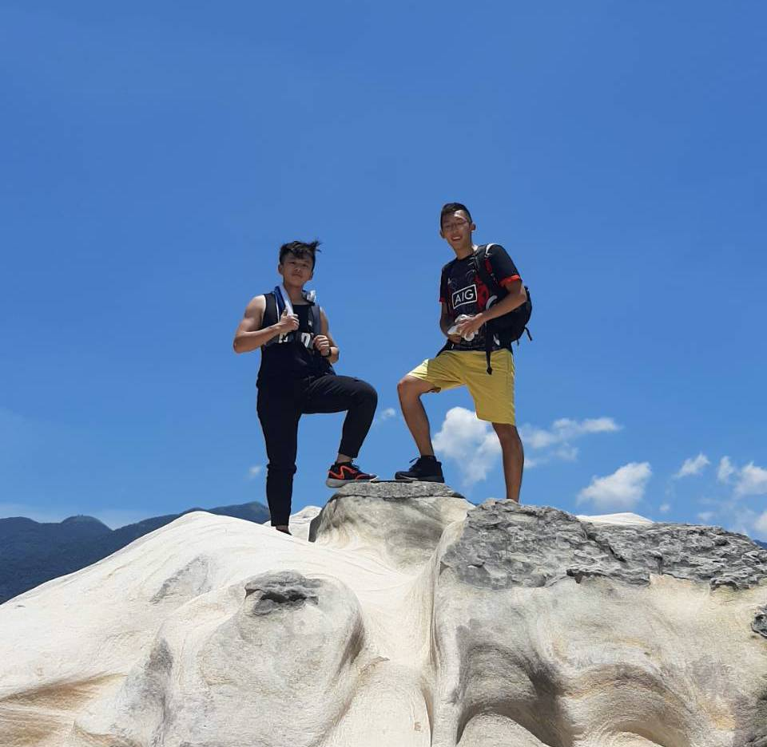

I enjoy reading, great mentors for mutual learning, and socializing with new people with a different experience. Therefore, I regularly participate in the reading forum, language exchange, symphony band, and hiking. In the reading forum, one of us, a group of new friends, shares reflections on one of the significant books she/he has read about. This is usually a great chance to interpret another perspective on the same issue. Language exchange is a more exciting activity because it is a rare opportunity to chat with foreigners to practice your 2nd or 3rd language. Meanwhile, you can also teach others the language that you are more familiar with.
symphony band of Texas A&M University in Galveston
I've been playing saxophone alone through my childhood, I am glad that the symphony band of Texas A&M University provides me the opportunity to play music as a group. We practice weekly and often give performance for University on serval events on the campus.
Hiking with my friend in Taipei, Taiwan
He is one of my great mentors who I usually go hiking with. Viewing the city we see everyday from a different perspective is another form of meditation in my life.
Thank you for visiting my website!